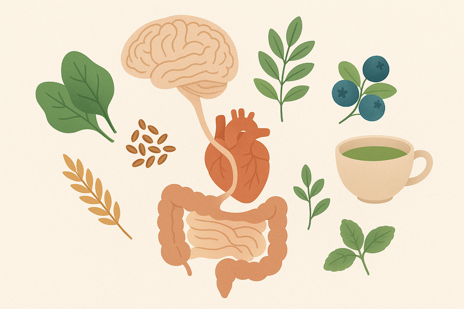

🌿 Nourishing the Vagus Nerve: How Plant-Based Foods Support Your Calm System
Learn how plant-based foods can naturally support your vagus nerve, promoting calm, emotional balance, and overall wellness. Discover nutrients and dietary strategies that nourish your nervous system from the inside out.

Understanding the Vagus Nerve and Its Connection to Emotions
The vagus nerve is the longest component of the parasympathetic nervous system, sending signals between the brain, heart, and digestive tract. When stress overwhelms the system, vagal activity can diminish, leading to digestive discomfort, sleep disturbances, and heightened emotional reactivity. Supporting the vagus nerve through diet complements meditation, breathwork, and other wellness practices.
Three Ways Plant-Based Foods Support the Vagus Nerve
1. Promoting Gut Microbiome Diversity
A fiber-rich, plant-forward diet promotes microbial diversity, helping the gut send calm signals to the brain. Beneficial gut bacteria produce short-chain fatty acids (SCFAs), supporting neural stability and emotional balance.
```
2. Providing Nutrients That Activate the Parasympathetic Nervous System
Key nutrients include:
Magnesium: Relaxes muscles and stabilizes mood
B Vitamins: Essential for neurotransmitter synthesis
Polyphenols: Berries and green tea protect nerve cells from oxidative stress
3. Reducing Dietary Stressors That Overload the Nervous System
Highly processed foods, excess sugar, and overstimulating spicy foods can spike stress hormones and interfere with vagal tone. A minimally processed plant-based diet lightens the load on the nervous system.
```
Top 6 Plant-Based Foods for Vagus Nerve Health
Flaxseeds: Support neural stability and gut-brain communication
Dark Leafy Greens: Spinach, kale—rich in magnesium and folate
Blueberries: Antioxidant-rich for neural protection
Fermented Plant Foods: Kombucha, plant-based yogurt for gut microbiome support
Whole Grains: Oats, brown rice stabilize blood sugar and stress hormones
Gentle Herbal Infusions: Lemon balm, lavender for parasympathetic activation
How to Support the Vagus Nerve Throughout the Day
Morning: Whole grains and warm, non-stimulating tea
Afternoon: Leafy greens with healthy fats for cognitive clarity
Evening: Mild herbal teas to ease into rest
Common Misconceptions: It’s Not Only About Meditation
While meditation and breathwork are helpful, dietary choices are equally critical. Plant-based nutrition creates a durable foundation for physical and emotional well-being.
✨ By nourishing your vagus nerve with plant-based foods, you can strengthen emotional resilience, support digestion, and cultivate calm. Small, mindful dietary choices can make a meaningful difference in daily life.